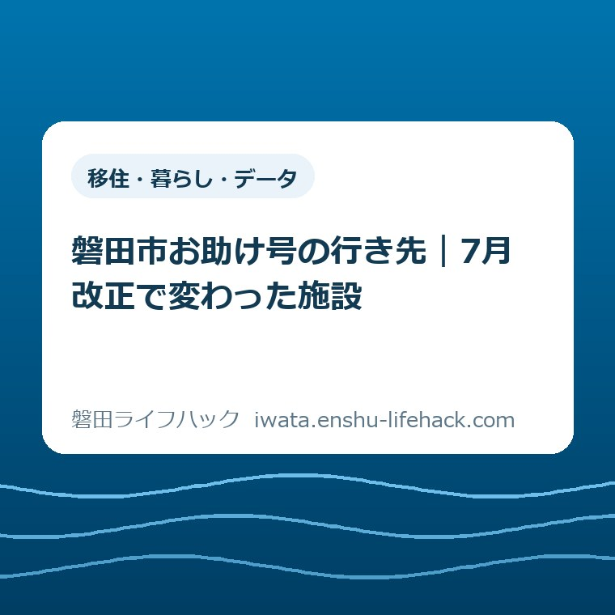

移住・暮らし・データ
磐田市お助け号の行き先｜7月改正で変わった施設

この記事の要点
Q. 親の通院先へ、お助け号で行ける？
A. お助け号の利用可否は、自宅の地区・路線・利用条件で変わります。2026年7月1日改正では、豊田線にみずのクリニックを追加し、福田線から3施設を削除。磐田中央線では鈴木歯科医院の住所と、ハートセンター磐田の名称が変わりました。親の通院先を一つ、利用する路線の最新指定施設一覧と照合してください。
親の送迎は、車を出す時間だけでは終わらない
親の通院送迎を担う家族は、診察の予約時刻に合わせて仕事や家事を動かしています。行きの運転だけでなく、診察が終わるまでの待ち時間や帰りの迎えもあります。「お助け号がある」と知っていても、自宅からいつもの医院へ行けるかが分からなければ、送迎の予定は外せません。
デマンド型乗合タクシー「お助け号」は、居住地区や路線などの条件で利用可否が変わります。磐田市の案内では、自宅と指定施設を結び、予約した人が乗り合わせる仕組みです。市内の住所を自由に指定できる一般のタクシーと同じようには考えられません。最初に見るのは、親が使う路線の行き先です。
大石浩之（磐田市／不動産業）です。私は、送迎している家族に「制度を調べて」と仕事を一つ増やすだけでは足りないと考えます。この記事では、2026年7月1日に変わった施設を先に並べます。登録や予約の詳しい手順は別にして、手元の通院先が改正に関係するかを確かめるための読み方です。
確認日は2026年10月4日です。この日は日曜日で、お助け号は運休です。読んだ当日に乗ることを勧める記事ではありません。今日は診察券や通院予定から医院を一つ選び、市の指定施設一覧と照らし合わせるところまでで十分です。
2026年7月改正は、6施設を4種類に分けて読む
磐田市の「デマンド（予約）型乗合タクシーの改正内容」は、2026年7月1日からの変更を掲載しています。追加は1施設、削除は3施設、住所変更は1施設、名称変更は1施設です。数は改正表の行を数えたもので、お助け号全体の指定施設数ではありません。
| 路線 | 区分 | 施設と変更内容 |
|---|---|---|
| 豊田線 | 追加 | みずのクリニック |
| 福田線 | 削除 | 大橋医院 |
| 福田線 | 削除 | 歯科クリニックあやな |
| 福田線 | 削除 | 寺田歯科医院 |
| 磐田中央線 | 住所変更 | 鈴木歯科医院：磐田市中泉2982-1 → 磐田市中泉2502-2 |
| 磐田中央線 | 名称変更 | ハートセンター磐田 → ハートクリニック磐田 |
表は磐田市の運行改正内容をもとに作成しました。「追加」「削除」と、「住所」「名称」の変更を分けたのは、家族が直すメモが異なるためです。行ける施設が増えた場合と、同じ名前でも降りる場所を確かめ直す場合を、一括して「変更あり」にしないほうが照合できます。
改正資料は、変更箇所だけを知らせる資料です。親の医院がこの表にないからといって、指定施設ではないとは言えません。逆に、この表に名前が載っていても、削除欄なら現在の行き先として読むことはできません。変更表と、路線別の指定施設一覧は役割が違います。

豊田線は、みずのクリニックが追加された
豊田線では、みずのクリニックが指定施設に加わりました。改正資料に記された運賃は片道1人400円です。市が掲載する2026年7月1日現在の豊田線の指定施設一覧でも、医療機関の欄に同院の名前を確認できます。
以前の一覧を保存した家族は、医院の名前を探して見つからなかった記憶が残っているかもしれません。今回の追加は、その判断を見直すきっかけになります。ただし、追加されたのは豊田線の指定施設です。市内のどの路線からでも行けるという意味に広げないでください。
私は、追加の知らせを「便利になった」の一言で終わらせたくありません。みずのクリニックへ通う家庭なら、親の利用路線と合うかを確かめることで、家族が毎回運転する以外の候補を検討できます。候補が一つ増えることと、次回の送迎を任せられることは別の段階です。
片道400円という数字も、その区間の案内として読んでください。親に適用される割引や、付き添いを含めた利用条件は別に確認する必要があります。この記事の変更表だけで家族全員分の交通費を確定させず、正式な施設名と利用路線が合うことを先に確かめます。
福田線の3施設は、削除と閉院を混同しない
福田線から削除された指定施設は、大橋医院、歯科クリニックあやな、寺田歯科医院です。磐田市の改正資料は「指定施設の削除」と記しています。2026年7月1日現在の福田線の指定施設一覧にも、この3施設の名前は掲載されていません。
この削除は、お助け号の福田線の行き先に関する情報です。改正資料には、医院が閉院したのか、診療の内容が変わったのかといった説明はありません。削除という言葉だけで、親の予約がなくなった、診察を受けられないと判断することはできません。
気をつけたいのは、寺田歯科医院という名前が、磐田中央線の指定施設一覧には載っている点です。福田線で削除された事実を「全路線で削除」と言い換えると誤りになります。目的地の名前だけを市全体の資料から検索する方法では、どの路線の記載かを見落とします。
家族の古いメモに「ふくタクで行く」と残っていた場合は、まず路線名と施設名をセットで見直します。受診予定そのものを変える必要があるかは、交通の資料から決められません。通院の予約を確認する先と、移動手段を相談する先を分けると、尋ねる内容が整理できます。
私は、行き先から外れた家庭に、別の医院への変更を安易に勧めたくありません。かかりつけ先を変える話と、そこへ通う交通を組み直す話は別だからです。使える別の移動方法があるかは個別に確認し、その答えが出るまでは、家族の送迎予定を一方的に消さないほうがよいと考えます。
磐田中央線は、同じ医院名と旧名称に注意する
磐田中央線の鈴木歯科医院は、改正資料上の住所が「磐田市中泉2982-1」から「磐田市中泉2502-2」に変更されています。施設の名前だけなら同じなので、名前を探すだけの確認では差に気づきません。古い送迎メモに番地がある場合は、住所の欄も読み直してください。
磐田中央線の指定施設一覧には、「鈴木歯科医院（見付）」と「鈴木歯科医院（中泉）」の両方が載っています。今回の住所変更は、改正資料の中泉の住所と結び付けて読む必要があります。「鈴木歯科」とだけ書いたメモを、そのまま予約や家族への説明に使わないほうが確実です。
同じ磐田中央線では、「ハートセンター磐田」が「ハートクリニック磐田」へ名称変更されています。7月1日現在の指定施設一覧は新名称で掲載されています。親が使う呼び名や古い診察券の表記が旧名称でも、一覧で新名称を照合する必要があります。
名称変更は、施設が削除されたという記載とは違います。旧名称が検索で見つからないとき、名前が消えたと結論づける前に、改正資料の新旧対応を見ます。ただし、名称変更だけを根拠に、診療日や担当医、受付の方法まで同じだとは判断できません。
家族用のメモには「ハートクリニック磐田（旧名：ハートセンター磐田）」と併記する方法があります。住所変更なら旧住所を残したまま使わず、「確認した日」と新住所を一緒に書きます。これは市の申請様式の説明ではなく、家族の伝言を取り違えにくくするための私の提案です。
行き先は、親の自宅の地区から照合する
磐田市の概要ページによると、お助け号は8路線です。竜洋線、福田線、豊岡線、磐田北部線、磐田東部線、磐田南部線、豊田線、磐田中央線に分かれています。施設がある場所から路線を選ぶ前に、利用する親の自宅がどの運行地区にあるかを確認する順番になります。
磐田中央線は見付・中泉・今之浦地区、北部線は向笠・大藤・岩田地区、東部線は御厨・南御厨・西貝・田原地区、南部線は天竜・長野・於保地区として紹介されています。地区名の境目や自宅の該当路線が分からないときは、印象で決めず、市のパンフレットや担当窓口で確かめます。
親と離れて暮らす家族は、自分の住所ではなく親の利用する住所で資料を探します。市の概要には、施設入所を理由とする場合の登録住所の扱いも記載されています。住民票と暮らす場所が異なる家庭は、住所が違っても当然使えると考えず、公式ページで個別の登録条件を確認してください。
磐田の生活圏は、旧来の地区名だけでは距離感をつかみにくいことがあります。土地勘を整理したい場合は、磐田市の五つの地区と暮らしの距離も参考になります。ただし、その記事の地区紹介は、お助け号の運行区域を確定する資料ではありません。

路線が分かったら、市の概要ページからその路線の指定施設一覧を開きます。名前が見つかった場合も、住所変更や同名の医院がないかを改正表で見ます。見つからない場合は、旧名称と新名称の両方を照合し、それでも不明なら、施設名と住所を添えて担当窓口へ確認する材料にします。
行き先が一致しても、利用の条件は残ります。市は事前の利用者登録が必要と案内し、磐田中央線には年齢制限があると明記しています。年齢や居住条件に加え、時刻表と通院予定を合わせる確認も必要です。施設一覧への掲載だけで、親が次回必ず乗れるという結論にはなりません。
良い点は、家族が変更箇所から確認を始められること
磐田市の運行改正資料は、追加・削除・住所変更・名称変更を1枚で示しています。路線別一覧を最初から読み比べなくても、どの種類の変更があったかを確認できます。改正の適用日も冒頭にあり、古い資料と新しい資料を区別する手がかりになります。
私は、この分け方は送迎を担う家族に役立つと評価します。通院先を一つしか確認する時間がなくても、変更の種類が分かれば、名前を直すのか、住所を直すのか、交通手段を考え直すのかを分けられます。制度の説明を全部読まなければ着手できない形より、家族の段取りに近いからです。
公式の概要ページには、8路線それぞれの指定施設一覧への入口があります。今回の3路線以外を使う家庭も、自分の路線の資料へ進めます。私は、改正表で差を見て、最新一覧で目的地を確認できる二段構えに意味があると考えます。家族の記憶だけに頼らず、同じ資料を見ながら話せます。
注文したい点は、見つかった後の迷いを減らす案内
お助け号の行き先を調べる家族には、指定施設名が見つかってからも判断が残ります。自宅の路線に合うか、同名施設ではないか、利用条件に合うかという確認です。改正資料と施設一覧だけで、各家庭の往復の通院計画まですべて確定するわけではありません。
私が案内の仕方に望むのは、施設名の横で、路線と確認日を一緒に残しやすくすることです。「医院が載っていた」という伝言だけでは、別の家族がどの資料を見たのか分かりません。とくに福田線の削除と中央線の同名施設の掲載は、施設名だけを抜き出すと意味が変わります。
もう一つ、移動できることと、受診の付き添いを任せられることを混ぜない説明が要ると考えます。市の概要が説明しているのは乗合の移動サービスです。診察受付の手助けや、院内での付き添いまで含まれるとは確認できません。家族は交通を変えても残る仕事を、別の欄に書いておくと話し合えます。
対案・結論｜今日は親の通院先を一つ照合する
2026年10月4日にできる一歩は、親の通院先を一つ、市の指定施設一覧と照合することです。磐田市の概要では、運行は月曜から土曜で、日曜・祝日と12月31日から1月3日は運休です。日曜の今日は、利用する日を決める前の確認にとどめます。
家族のメモには、医院の正式名、住所、親の利用路線、資料の基準日、確認日を書きます。医院が複数あっても、一度に全部を埋める必要はありません。次に受診する医院を一つ選ぶほうが、確認結果と次回の送迎予定をつなげられます。
- 親の次の通院先を一つ選び、正式名と住所を控える。
- 親の自宅の地区に対応する路線の指定施設一覧で、その通院先を探す。
- 7月改正の追加・削除・住所・名称変更と照合し、2026年10月4日に確認したと残す。
照合結果は「掲載あり」「削除を確認」「見つからず要確認」のように、調べて分かった範囲で残します。「利用できる」とだけ書くと、登録や便の確認も終わったように伝わります。家族が代わって調べる場合にも、どこまで済んだかが分かる書き方を勧めます。
登録や予約へ進む段階では、バス・お助け号と免許返納後の移動案内から手続きの入口を確認できます。申請などで窓口へ行く必要がある場合には、磐田市の4支所でできる手続きも参考にしてください。必要な窓口を確かめてから予定を組むと、家族の移動を追加せずに済む可能性があります。
行きの候補便が見つかっても、帰りをどうするかは別に残ります。診察終了の見込みや親の負担を聞きながら、往復を確認してから家族の送迎予定を変えます。便の確保や実際の利用可否は、予約先への確認が必要です。この記事から空席や到着時刻を保証することはできません。
大石の視点｜家族の段取りが一つ軽くなるかで考える
私は、制度の名前を覚えるより、次の通院日に誰が動くかという段取りが一つ軽くなることに意味があると考えます。「お助け号を使えばいい」で話を終えるのは、調べる役と予約する役を、送迎してきた家族にもう一度戻すだけです。親の通院先が対象かを一つ確かめることから始めたいと思います。
ただ、どこまで移動を任せれば家族の負担が減るのか、私は一覧表だけでは決められません。親が一人で待つことに不安を感じる場合も、家族が診察の説明を一緒に聞きたい場合もあるはずです。交通が確保できたという一点だけで、付き添いまで不要になったとする判断には迷いがあります。
親の希望を聞くときは、「次から一人で行って」と結論を渡す前に、移動と受診のどこが心配かを分ける方法があります。話を始める考え方は、親の希望を決めつけない人生会議の備えにも書きました。移動方法の選択でも、本人の言葉と家族の都合を別々に置いて考えたいと思います。
ここまでの評価と家族メモの提案は、私の意見です。具体的な家庭の体験談や、個別の利用結果を紹介したものではありません。2026年7月の変更を受けて、通院先の照合が一つ済めば、その結果をもとに相談できます。最後は必ず磐田市公式ページの最新の一覧と利用条件で確認してください。
お助け号の行き先についてのよくある質問
お助け号の目的地は、施設名だけでなく路線と合わせて確認します。ここでは、全施設が対象か、削除をどう読むか、公開日に乗れるかという3つの疑問を整理します。回答の確認日は2026年10月4日です。
磐田市内の医院なら、どこでもお助け号で行けますか？
市内の全医院が対象ではありません。お助け号は自宅と指定施設を結ぶ乗合の移動サービスです。親の自宅の運行地区と路線を確認し、その路線の最新一覧で通院先の正式名を探します。磐田中央線には年齢制限もあります。掲載があっても、登録や利用条件、往復の便は別に確認してください。
福田線の指定施設から削除された医院は、閉院したのですか？
2026年7月改正資料だけでは、閉院したとは判断できません。大橋医院、歯科クリニックあやな、寺田歯科医院の削除は、福田線の指定施設に関する変更です。診療状況や削除理由は記載されていません。受診予定は医院へ、移動の利用可否は市の公式案内や予約先へ、それぞれ確認してください。
2026年10月4日の日曜日に、お助け号に乗れますか？
2026年10月4日は日曜日のため運休です。市の案内では月曜から土曜に運行し、日曜・祝日と12月31日から1月3日は運休します。今日は親の通院先を一つ、利用路線の指定施設一覧と照合する準備に充てられます。次回乗る日については、最新の時刻表と予約条件を市公式ページで確認してください。
参考にした公式情報
- デマンド（予約）型乗合タクシーの改正内容（令和8年7月1日～）／磐田市（2026年10月4日確認）
- デマンド型乗合タクシー（2026年9月10日更新）／磐田市（2026年10月4日確認）
- 豊田線 指定施設（目的地）一覧／磐田市（2026年10月4日確認）
- 福田線 指定施設（目的地）一覧／磐田市（2026年10月4日確認）
- 磐田中央線 指定施設（目的地）一覧／磐田市（2026年10月4日確認）
最終確認日：2026-10-04 ／ 本記事は公表情報と執筆者の見解を分けて記載しています。制度・数値・公開状況は変更される場合があるため、最新情報は磐田市公式ページでご確認ください。
 大石浩之／磐田市／不動産業・宅地建物取引士
大石浩之／磐田市／不動産業・宅地建物取引士